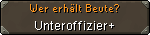
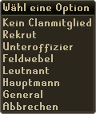

")
Clanchat
Einführung
Clanchat einrichten

|
Um zu chatten, müsst ihr entweder euren eigenen Chatraum einrichten oder den eines anderen Spielers betreten. Dazu müsst ihr nur auf eine dieser beiden Schaltflächen klicken:
Andere Gründe, aus denen ihr einen Chatraum nicht betreten könnt:
|


Die Leute in der Mitte des Fensters sind alle auf eurer Freunde-Liste. Wenn ihr also einem Clanmitglied einen bestimmten Rang verleihen wollt, müsst ihr ihn zuerst auf eure Freunde-Liste setzen. Ihr könnt euch auch dazu entscheiden, alle Spieler in euren Chatraum zu lassen, sodass auch Spieler die nicht auf eurer Freunde-Liste stehen Zugriff haben, allerdings könnt ihr ihnen keinen Rang verleihen. Außerdem kann es vorkommen, dass sie aus dem Chatraum geworfen werden, wenn dieser voll ist und ein Mitglied mit einem höheren Rang den Raum betritt.
 |
Clan-Name Mit dieser Schaltfläche könnt ihr dem Raum einen Namen geben. Der Name leitet alle Chats im entsprechenden Raum ein. Euer Chatraum wird nicht funktionieren, solange er keinen Namen zugewiesen bekommen hat. Begriffe die vom Wortfilter blockiert werden, können nicht als Namen verwendet werden. |
 |
Wer darf den Raum betreten? Hier könnt ihr einstellen, dass nur Mitglieder ab eines bestimmten Rangs den Raum betreten dürfen. Ihr könnt ihn natürlich auch für alle zugänglich machen. Falls ihr den benötigten Rang erhöht, während sich Mitglieder mit einem niedrigeren Rang im Raum befinden, werden diese aus dem Chatraum geworfen, sobald die Änderung übernommen wird. |
 |
Wer darf im Raum chatten? Hier könnt ihr einstellten, wer chatten darf und wer nur lesen kann. Diese Funktion könnt ihr dazu verwenden, eine wichtige Nachricht zu verkünden, ohne dass die anderen Mitglieder sie durch weitere Chats nach oben vom Fensterrand schieben werden. |
 |
Wer darf andere aus dem Chatraum rauswerfen? Mit dieser Schaltfläche könnt ihr bestimmen, wer andere Spieler aus dem Chatraum rauswerfen darf. Weitere Informationen dazu findet ihr weiter unten. |
|  | Wer erhält Beute? Wenn ihr in einem Multikampf-Gebiet seid, könnt ihr einstellen, dass nur Spieler mit einem bestimmten Rang Beute teilen können, wenn Beuteteilung an ist (unter Beuteteilung erfahrt ihr mehr). |
Zuerst müsst ihr eurem Chatraum einen Namen geben. Dieser Name leitet alle Chats ein, die im Raum stattfinden, sodass ihr sofort sehen könnt, welche Diskussionen euer Clan führt und ihr nicht darüber rätseln müsst, ob ein Gespräch im öffentlichen oder privaten Chat passiert. Niemand kann einen Chatraum benutzen, bevor der Chat einen Namen zugeteilt bekommen hat. Bitte beachtet, dass Umlaute (ö, ä, etc.) und andere Sonderzeichen nicht im Namen des Chatraums benutzt werden dürfen. Alle Worte, die normalerweise vom Chatfilter geblockt werden, dürfen nicht für den Namen des Chatraums benutzt werden. Verstöße gegen diese Regel werden bestraft.
Alle Änderungen, die ihr an den Optionen eures Chatraums vornehmt, werden innerhalb einer Minute übernommen.
 |
Die anderen Schaltflächen auf der linken Seite sind auf die Standardwerte eingestellt. Über einen Rechtsklick könnt ihr andere Optionen auswählen. Wie ihr sehen könnt, gibt es viele verschiedene Ränge die ihr benutzen könnt, um euren Clan nach euren Wünschen einzurichten. Bitte beachtet, dass Jagex-Moderatoren jeden Chatraum betreten, in ihm sprechen und Mitglieder rauswerfen können. Dafür könnt ihr den Mods jeden beliebigen Rang zuweisen. Um einem Mitglied einen Rang zu geben, müsst ihr nur ihren momentanen Rang in der Liste rechtsklicken. Das öffnet ein Fenster mit Optionen wir rechts veranschaulicht. Darüber kann der Gründer des Chatraums die Ränge so verteilen, wie er oder sie es für richtig hält. Es ist ratsam, auch ein paar anderen Mitgliedern die Möglichkeit zu geben, andere Spieler rauszuwerfen, damit euer Chat moderiert werden kann, während ihr gerade Monster besiegt oder offline seid. |
 |

Wenn man sich den Namen dieses Clans ansieht, dann kann man getrost davon ausgehen, dass die Mitglieder ausschließlich mit den Kochgegenständen aus ‘ein ausgekochtes Rezept' in die Schlacht ziehen.
Dieses Beispiel zeigt, dass sowohl 'Freund3' als auch 'Freund4' den Chatraum ‘Loeffel' nicht betreten dürfen und dass 'Freund7' andere Mitglieder aus dem Chat rauswerfen darf.
Mitglieder, die sich auf der Freunde-Liste des Gründers befinden oder einen Rang erhalten haben, werden durch folgende Symbole gekennzeichnet:
| Freund | Rekrut | Unteroffizier | Feldwebel |
| Leutnant | Hauptmann | General | Gründer |
Clanchat benutzen
Wie bereits beschrieben, müsst ihr auf ‘Betreten' klicken und den Namen des Gründers eingeben, um einen Chatraum zu betreten. Das trifft auch zu, falls ihr der Gründer seid. Außerdem gilt es zu beachten, dass man einen Chatraum selbst dann betreten kann, wenn der Gründer offline ist. Aus diesem Grund ist es sehr ratsam, Spieler zu bestimmen, die andere Mitglieder aus dem Chatraum rauswerfen können.

 einleiten. Falls ihr mit einem Chatraum verbunden seid, sehen dann alle Mitglieder des Raums euren Chat.
einleiten. Falls ihr mit einem Chatraum verbunden seid, sehen dann alle Mitglieder des Raums euren Chat. Um einen Raum zu verlassen, müsst ihr nur auf ‘Verlassen' klicken. Das ist die Schaltfläche, die ihr zuvor zum ‘Betreten' benutzt habt.
Falls jemand die RuneScape-Regeln im Clanchat missachtet, kann die Person wie gewohnt gemeldet werden.
Spieler aus dem Chatraum rauswerfen
Falls sich jemand im Chatraum daneben benimmt, und ihr den benötigten Rang habt, dann könnt ihr den betreffenden Spieler aus dem Raum rauswerfen. Dazu müsst ihr den jeweiligen Spielernamen nur rechtsklicken und 'Rauswerfen' auswählen. Das entfernt sie aus dem Raum und macht es ihnen eine Stunde lang unmöglich, den Raum zu betreten. Ihr könnt nur Spieler mit einem niedrigeren Rang rauswerfen. Der Gründer hat immer den höchsten Rang in dieser Beziehung.
Achtung: Wenn alle Leute den Chatraum verlassen, sind die verbannten Spieler wieder in der Lage, den Raum zu betreten.
Falls ihr jemanden daran hindern wollt, euren Chatraum zu betreten, so müsst ihr die Person eurer Ignorieren-Liste hinzufügen. Falls ihr euch umentscheiden solltet, müsst ihr sie wieder von eurer Ignorieren-Liste entfernen.

Weitere Artikel in Steuerung
|
|
|
Weiterführende Informationen Wenn euch dieser Artikel nicht weitergeholfen hat, könnt ihr in den folgenden Kapiteln der RuneScape-Webseite mehr Informationen finden:
|
|